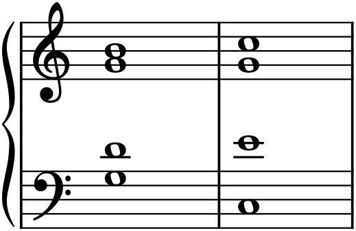
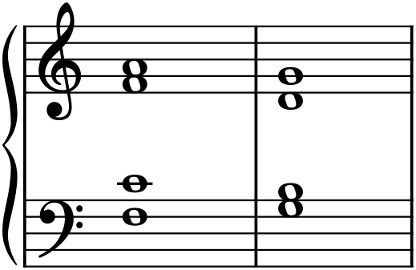
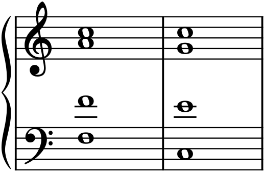
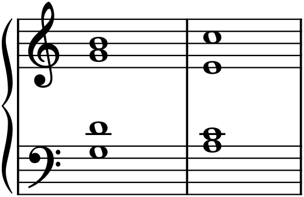

Music moves in phrases, and phrases need punctuation — places to pause, to breathe, to come to a stop. In language that work is done by commas and periods; in harmony it is done by cadences, standard two-chord formulas that close a phrase with a particular degree of finality. A cadence is how a passage tells you it has reached the end of a thought. There are four you need, and they map almost exactly onto marks of punctuation, from the full stop to the comma to the surprise of a sentence that swerves away from its expected ending.
15.1What a cadence is
A cadence is a short harmonic progression — usually its final two chords — that gives a phrase its sense of arrival. What makes it a cadence is not the chords alone but their placement: they fall at the end of a phrase, at the moment the music settles or pauses. Different cadences settle to different degrees, from a complete, conclusive stop to a hanging question that demands continuation, and choosing among them is how you control the punctuation of your music. All four below are shown in C major, in the four-part texture of Chapter 14, so you can see the voice leading as well as hear the effect.
15.2The authentic cadence
The strongest close is the authentic cadence: V–I, the dominant resolving to the tonic. This is the harmonic full stop, the period at the end of a sentence. It draws on the deepest gravity in the key — the dominant’s pull home (Chapter 12), driven by the leading tone rising to the tonic — and nothing sounds more final.

Its most emphatic form, shown in Figure 15.1, is the perfect authentic cadence (PAC): both chords in root position, and the soprano landing on the tonic note. That combination — root-position V to root-position I, melody arriving home on 1̂ — is as closed as harmony gets, and it is how strong sections and whole pieces end. A weaker variant, the imperfect authentic cadence (IAC), still goes V–I but softens the effect — the soprano ends on the third or fifth instead of the tonic, or a chord is inverted — giving a period that is real but less absolute.
15.3The half cadence
Where the authentic cadence is a full stop, the half cadence is a comma. It ends on the dominant — any suitable chord moving to V — and because the dominant is a chord of tension, stopping there leaves the music suspended, clearly pausing but plainly expecting to continue.

The half cadence in Figure 15.2 pauses without concluding; it is the sound of a question, or of the first half of a musical sentence handing off to the second. It is enormously common at the midpoint of phrases, precisely because it opens a door that the following phrase will close with an authentic cadence.
15.4The plagal cadence
The plagal cadence — IV–I — is the gentle one, famous as the “Amen” sung at the end of hymns. It reaches the tonic, so it does conclude, but by the subdominant rather than the dominant, without the leading-tone drive, so its arrival is soft and settled rather than emphatic.

You will usually meet the plagal cadence of Figure 15.3 as an afterword — appended after an authentic cadence has already ended the phrase, adding a final, peaceful “Amen” to confirm the close. On its own it is warmer and less decisive than V–I, a period spoken softly.
15.5The deceptive cadence
The deceptive cadence is the plot twist. Everything sets up an authentic cadence — the dominant arrives, the ear fully expects the tonic — and then the music resolves instead to vi, the submediant, a related minor chord that shares two notes with the tonic but is not home.

The deception in Figure 15.4 works precisely because the authentic cadence is so strongly expected; the swerve to vi is a sentence that seems about to end and instead turns a corner, buying time and prolonging the music. Composers use it to extend a phrase, to avoid closing too soon, or simply for the pleasure of the surprise — after which a real authentic cadence usually follows to close for good.
15.6Cadences shape the music
Cadences are the joints of a piece. They mark where phrases end and how firmly, and by choosing a comma here and a full stop there — a half cadence to pause, an authentic cadence to conclude, a deceptive one to prolong — you shape music into sentences and paragraphs. That larger architecture is the subject of Part 3 (how phrases are built) and Part 4 (how they combine into forms), but it all rests on these four cadential formulas. When you listen to any tonal music from now on, you will start to hear the punctuation: the little pauses that are half cadences, the firm stops that are authentic cadences, the gentle “Amens,” and the occasional delicious swerve of a deception.
In MuseScore
Cadences are just short progressions, entered as in Chapter 14 and heard on playback — and hearing them is the whole point, since each has a distinct feeling of closure.
- Set up a grand staff (or SATB template) and enter each cadence as two four-part chords, one voice at a time, following the voicings in the figures above.
- Label them with Add ▸ Text ▸ Roman Numeral Analysis:
V Ifor authentic,IV Vfor half,IV Ifor plagal,V vifor deceptive. - Press Space and listen for the difference in finality. Play them back to back and the punctuation becomes obvious — the authentic cadence stops, the half cadence hangs, the plagal sighs, the deceptive surprises.
Try it: enter a V chord (G–B–D) and then, in turn, resolve it three different ways — to I (C–E–G) for an authentic cadence, and to vi (A–C–E) for a deceptive one — playing each. The dominant is identical; only its resolution changes, and that single difference is the gap between arriving home and being sent, at the last second, somewhere else.